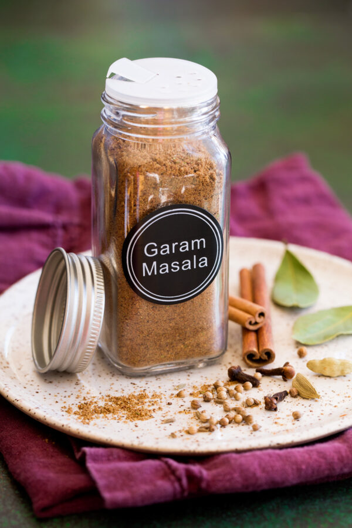

Garam Masala

This is a quick Garam Masala (Indian spice) mix.
Per Serving: 6 calories; protein 0.2g; carbohydrates 1g; fat 0.2g; sodium 1.3mg.
Ingredients
- 1 tablespoon ground cumin
- 1 ½ teaspoons ground coriander
- 1 ½ teaspoons ground cardamom
- 1 ½ teaspoons ground black pepper
- 1 teaspoon ground cinnamon
- ½ teaspoon ground cloves
- ½ teaspoon ground nutmeg
Steps
- Mix cumin, coriander, cardamom, pepper, cinnamon, cloves, and nutmeg in a bowl. Place mix in an airtight container, and store in a cool, dry place.